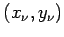
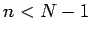

Inhalt Index DeskTop Bronstein

 Numerische Mathematik Approximation, Ausgleichsrechnung, Harmonische Analyse Approximation im Mittel Diskrete Aufgabe, Normalgleichungen, Householder-Verfahren
Numerische Mathematik Approximation, Ausgleichsrechnung, Harmonische Analyse Approximation im Mittel Diskrete Aufgabe, Normalgleichungen, Householder-Verfahren


In Matrizenschreibweise haben die Normalgleichungen (19.177) und die Fehlerquadratsumme (19.176) die folgende übersichtliche Form:
mit
Würde man an Stelle der Forderung, die Fehlerquadratsumme zu minimieren, in den N Punkten  die Interpolationsforderung stellen, dann ergäbe sich das Gleichungssystem
ein überbestimmtes lineares Gleichungssystem im Fall , das in der Regel keine Lösung hat. Durch Multiplikation mit erhält man aus (19.180) das Normalgleichungssystem (19.177) bzw. (19.179a). Aus numerischer Sicht ist es jedoch günstiger, zur Lösung von Ausgleichsaufgaben auf (19.180) das HOUSEHOLDER-Verfahren anzuwenden, das eine Lösung im Sinne der minimalen Fehlerquadratsumme (19.176) liefert.